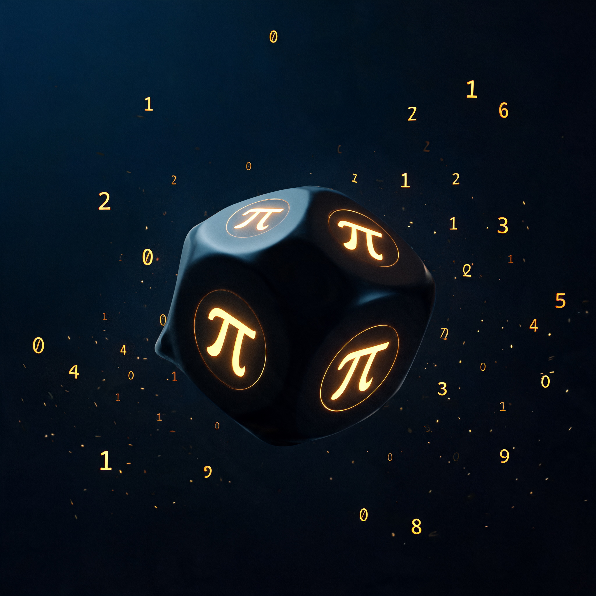

π 的小数位无限不循环、「看起来」很随机。但它能当真随机源吗？下面不靠嘴说，用四步亲手拆穿——每一步都点一下。
π 数据（前 100 万位）：加载中...

先说结论：π 的小数位是确定的、公开的——它不是随机源，更像一张无限长的表。下面四步，让「确定却看似随机」这个反直觉点自己说话。
四关连玩下来，你就知道它为什么不能当真随机源。
左边是 π 取段，右边是量子真随机（ANU 真空涨落）。连点「再掷一次」，观察两边谁在变、谁纹丝不动。
π 那一路永远一样——它只是回放同一段录音，不是随机。真随机源的定义是「拥有全部信息也无法预测下一次」；π 恰恰相反，任何人、任何机器、任何时刻，都能算出同一个答案。
你扮演 A，用 π 第 ? 位开始取 20 位当「密钥」。拖动起点，或点「黑客复原」——看 B 怎么原样猜到它。
π 的小数位对所有人公开可见。别人只要知道你用的哪一段（起点 N），就能精确复现你的「随机数」。这直接废掉了随机源最核心的用途——密码学安全：密钥、nonce、token 全都可预测。
拉远取到的位数，看 π 的 0~9 频次怎么收敛。数据越看越「完美」，但顶部这个徽章请你盯住。
π 是否「正规」（每个数字出现频率相等）至今是未证明的猜想。前 100 万位的分布确实非常接近 10%，数学上却没有保证——看起来像随机，不等于就是随机。
要用第 N 位之后的 k 位，π 得先算到第 N+k 位。十进制没有 BBP 那种 O(n) 捷径——把起点拉远，看代价怎么爆表。
起点 N 到百万级时，取一段随机数要先把 π 算到百万位以上——计算量随 N 爆炸。取远位的捷径 BBP 只对十六进制有效，十进制没有这等好事。所以现实里没人用 π 当随机源。
π 不是随机源——它是一张确定的、公开的、无限长的表。不是「宇宙自己也没算好」，而是「人类算得出、结果固定」。它最多是个特定的伪随机源，前提是你不介意它的可复现性。